건설기계설비산업기사 (2004-08-08 기출문제)
1과목: 기계제작법
1. 센터리스 연삭기에서 조정 숫돌차의 바깥 지름이 500 mm, 회전수가 40 rpm, 경사각이 4° 일 때, 봉재의 이송속도는?
- 4.4 m/min
- 6.27 m/min
- 10.82 m/min
- 8.8 m/min
(정답률: 알수없음)

2. 회전하는 롤러 사이로 소재를 통하게 하여 판재나 형재로 성형하는 가공법은?
- 전조
- 압출
- 압연
- 단조
(정답률: 알수없음)
3. 인발작업에서 인발력을 결정하는 인자가 아닌 것은?
- 다이(die) 마찰
- 단면감소율
- 압력각
- 재료의 유동성
(정답률: 알수없음)
4. 항온열처리의 종류로 틀린 것은?
- 마르템퍼링(martempering)
- 오스템퍼링(austempering)
- 마르퀜칭(marquenching)
- 오스퀜칭(ausquenching)
(정답률: 알수없음)
5. 기계가공을 한 후 표면의 조도를 표면거칠기 측정기로 측정하려고 한다. 표면거칠기의 측정방법에 해당되지 않는 것은?
- 광 절단식 표면거칠기 측정기
- 광파 간섭식 표면거칠기 측정기
- 삼침식 표면거칠기 측정기
- 촉침식 표면거칠기 비교측정기
(정답률: 알수없음)
6. 불활성 가스 아크 용접(inert gas arc welding)에 대한 설명으로 틀린 것은?
- 전자세 용접이 용이하고 고능률적이다.
- 청정작용이 있다.
- 피복제 및 용제가 필요하다.
- 아크가 극히 안정되고 스패터가 적다.
(정답률: 알수없음)
7. 테르밋 용접(thermit welding)법을 설명한 것 중 가장 알맞는 것은?
- 원자수소의 반응열을 이용한 용접법이다.
- 전기용접과 가스용접법을 결합한 방법이다.
- 산화철과 알루미늄의 반응열을 이용한 용접법이다.
- 액체산소를 이용한 가스용접법의 일종이다.
(정답률: 알수없음)
8. 수평 밀링머신에서 커터는 다음 중 어느 것에 끼워지는가?
- 오버암
- 아버
- 컬럼
- 니이
(정답률: 알수없음)
9. 블록게이지와 마이크로미터를 조합한 측정기로서 μm 단위의 높이를 설정하거나 또는 비교측정에서의 기준 게이지로 사용하는 측정기는?
- 공기마이크로미터
- 하이트 마이크로미터
- 사인바
- 나사 마이크로미터
(정답률: 알수없음)
10. 단조 완료 온도가 적정 온도 보다 높으면 어떤 현상이 나타나는가?
- 단조 시간이 길어진다.
- 결정입이 조대하여 진다.
- 결정입이 미세하여 진다.
- 내부 응력이 발생한다.
(정답률: 알수없음)
11. 호닝머신에서 내면가공시 일감에 대해 혼(hone)은 어떤 운동을 하는가?
- 회전운동
- 회전 및 직선 왕복운동
- 캠운동
- 직선 왕복운동
(정답률: 알수없음)
12. 금속을 소성 가공할 때 열간가공과 냉간가공을 구별하려면 아래의 어떤 온도를 기준으로 하는가?
- 담금질 온도
- 변태 온도
- 재결정 온도
- 단조 온도
(정답률: 알수없음)
13. 평면도 측정과 가장 관계가 적은 측정기는?
- 옵티컬 플랫(optical flat)
- 오토-콜리메이터(auto-collimator)
- 베벨 프로트랙터(bevel protractor)
- 수준기(level)
(정답률: 알수없음)
14. 두께 4 mm, 0.1% C 의 연강에 지름 10 mm 의 구멍을 펀칭가공할 때, 펀칭력은? (단, 판의 전단저항은 25 kgf/mm2으로 한다.)
- 약 3142 ㎏f
- 약 2500 ㎏f
- 약 6283 ㎏f
- 약 2743 ㎏f
(정답률: 알수없음)
15. 케이스 하드닝(case hardening)에 관하여 옳은 정의는?
- 가스 침탄법을 말한다.
- 고체 침탄법을 말한다.
- 액체 침탄법을 말한다.
- 침탄후의 열처리를 말한다.
(정답률: 알수없음)
16. 업셋(up set)작업에 대하여 올바르게 설명한 것은?
- 단면적을 크게 하여 길이를 줄인다.
- 단면적을 작게 하여 길이를 늘인다.
- 단면적을 크게 하여 길이를 늘인다.
- 단면적을 작게 하여 길이를 줄인다.
(정답률: 알수없음)
17. 드릴링 머신 작업에서 접시머리 볼트의 머리부분이 묻히도록 원뿔(추)자리 파기를 하는 작업은?
- 리밍(reaming)
- 카운터 보링(counterboring)
- 스폿 페이싱(spotfacing)
- 카운터 싱킹(countersinking)
(정답률: 알수없음)
18. 주물사의 시험에 속하지 않는 것은?
- 통기도 시험
- 내화도 시험
- 점착력 시험
- 피로 시험
(정답률: 알수없음)
19. 아베의 원리(Abbe's principle)에 대해 설명한 것은?
- 측정기의 측정면 모양은 피측정물의 외형이 곡면에는 평면, 안지름에는 구면이나 곡면을 사용한다.
- 피측정물과 표준자와는 측정방향에 있어서 일직선위에 배치하여야 한다.
- 측정시 눈의 위치를 언제나 눈금판에 대하여 수직이 되도록 한다.
- 측정자의 마모를 적게하기 위하여 내마모성이 큰 재료를 선택한다.
(정답률: 알수없음)
20. 큐펄러(Cupola) 용량의 기준은?
- 1회 용출되는 최대량
- 큐펄러의 내부용적
- 매 시간당 용해량
- 1회에 장입 할 수 있는 최대량
(정답률: 알수없음)
2과목: 재료역학
21. 다음 그림의 I형 단면에 대한 관성 모멘트 Ix ,Iy 을 구하면 몇 cm4인가?
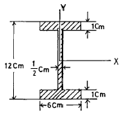
- Ix = 316, Iy = 28.3
- Ix = 406, Iy = 36.1
- Ix = 527, Iy = 39.5
- Ix = 618, Iy = 48.2
(정답률: 알수없음)
22. 원형축이 비틀림 모멘트를 받고 있을 때, 전단응력에 대한 다음 설명 중 맞는 것은?
- 지름에 반비례한다.
- 지름의 2승에 반비례한다.
- 지름의 3승에 반비례한다.
- 지름의 4승에 반비례한다.
(정답률: 알수없음)
23. 장주에서 길이가 같고 단면적이 같은 다음 기둥들 중에서 가장 큰 하중을 받을 수 있는 기둥은 어느 것인가?
- 양단회전
- 일단고정, 타단자유
- 일단회전, 타단고정
- 양단고정
(정답률: 알수없음)
24. 그림과 같이 길이가 2 m이고, 단면이 10 cm × 20 cm인 단순보에서 보의 전단만을 고려한다면 집중 하중 P는 몇 N까지 작용시킬 수 있는가? (단, 이 보의 허용 전단응력은 225 kPa이다.)
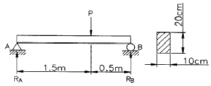
- 2565
- 3555
- 4000
- 12000
(정답률: 알수없음)
25. 다음과 같은 외팔보의 전단력 선도로 올바른 것은?
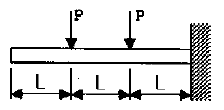
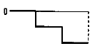
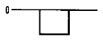
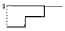
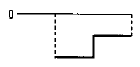
(정답률: 알수없음)
26. 단면의 폭이 8 cm, 높이가 20 cm, 길이가 9 m 인 황동 단순보의 중앙에 14 kN 의 집중하중이 작용할 때, 중앙에서의 곡률반지름은 약 몇 m 인가? (단, 황동의 탄성계수는 E = 110 GPa 이다.)
- 125
- 143
- 154
- 186
(정답률: 알수없음)
27. 2축응력에서 공액응력(complementary stress)의 성질을 가장 옳게 설명한 것은?
- 두 공액 전단응력은 크기와 방향은 언제나 같다.
- 두 공액 법선응력의 합은 언제나 다르다.
- 두 공액 법선응력의 차는 항상 같다.
- 두 공액 전단응력은 크기는 같고 방향은 반대이다.
(정답률: 알수없음)
28. 그림과 같이 2 개의 경사진 환봉 AC와 BC가 수직하중 20kN을 받고 있을 때, 이 강선의 인장강도를 400 MPa, 안전계수를 4 라고 하면 필요한 환봉의 지름은 최소 몇 mm 인가?
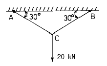
- 16
- 25.5
- 51.5
- 102
(정답률: 알수없음)
29. 길이 L=4 m, 지름 d=10 cm의 원형단면을 가진 외팔보가 있다. 허용굽힘응력을 20 MPa로 할 때 자유단에 가할 수 있는 하중은 몇 N 인가?
- 245
- 491
- 736
- 982
(정답률: 알수없음)
30. 그림과 같이 균일 분포하중 ω =10 kN/m과 집중하중 P=5kN의 힘이 작용하는 외팔보의 최대 굽힘모멘트는 몇 N.m인가？
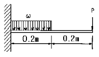
- 1001
- 2002
- 2200
- 4000
(정답률: 알수없음)
31. 길이 1 m의 환봉에 5 kN의 힘을 작용하여 길이가 1.002 m로 늘어났다면 변형률은 얼마인가?
- 2 × 10-3
- 4 × 10-3
- 2 × 10-6
- 4 × 10-6
(정답률: 알수없음)
32. 그림과 같은 단순지지보에서 지지점 A에 생긴 처짐각은?
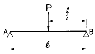
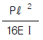
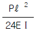
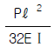
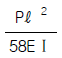
(정답률: 알수없음)
33. 지름 20 mm, 길이 400 mm의 환봉에 20 kN의 인장력이 작용하였을 때 이 환봉은 몇 mm 늘어나는가? (단, 탄성계수는 210 GPa이다.)
- 0.06
- 0.12
- 0.18
- 0.24
(정답률: 알수없음)
34. 다음 삼각형 A,B,C의 밑변에 대한 단면 1차모멘트 값은?
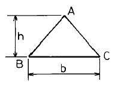
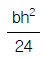
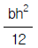
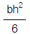
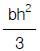
(정답률: 알수없음)
35. 한 변의 길이 a인 정사각형 단면을 그림과 같이 놓았을 때 X-X'에 대한 단면계수의 비 ZA/ZB는 얼마인가?
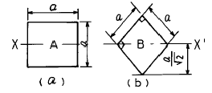
- 1/ √2
- √3 /2
- 2/ √3
- √2
(정답률: 알수없음)
36. 둥근 중실축의 지름을 2배로 하면 비틀림 강도는 몇 배가 되는가?
- 2배
- 4배
- 6배
- 8배
(정답률: 알수없음)
37. 최대 굽힘모멘트가 2500 N.m, 보의 굽힘응력이 85 MPa이라면, 직사각형 단면의 폭×높이(b×h)는 몇 mm인가? (단, 단면 높이는 단면 폭의 1.5배이다.)
- 41.2 × 61.8
- 42.8 × 64.2
- 40.8 × 61.2
- 44.2 × 66.3
(정답률: 알수없음)
38. 한변의 길이 10 cm인 정사각형 단면봉이 그림과 같이 하중을 받고 있다. 봉에 발생하는 최대 인장응력은 몇 MPa인가?
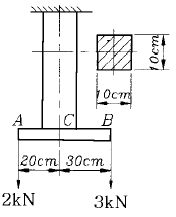
- 0.5
- 2.2
- 3.5
- 7.2
(정답률: 알수없음)
39. 그림과 같은 보에서 반력 RA는 몇 kN인가?
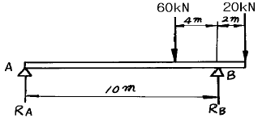
- 20
- 40
- 60
- 80
(정답률: 알수없음)
40. 그림과 같이 외팔보의 자유단에 굽힘모멘트 Mo만 작용할 때 자유단 A단의 처짐량은 얼마인가? (단, E : 탄성계수, I : 단면 2차 모멘트)
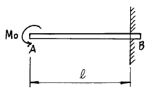
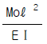
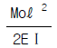
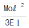
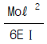
(정답률: 알수없음)
3과목: 기계설계 및 기계재료
41. 용접이음이 리벳 이음보다 우수한 점으로 해당되지 않는 것은?
- 이음 효율이 높다.
- 중량의 경감과 재료 절감이 가능하다.
- 대형가공기계가 필요하지 않고, 공작이 용이하다.
- 변형이 되지 않고, 잔류응력이 생기지 않는다.
(정답률: 알수없음)
42. 열간가공이 쉽고 다듬질 표면이 아름답고, 특히 용접성이 좋고 고온강도가 큰 장점이 있는 합금강은?
- Ni-Cr강
- Mn-Mo강
- Cr-Mo강
- W-Cr강
(정답률: 알수없음)
43. 철-콘스탄탄 열전대에 대한 설명 중 잘못된 것은?
- ＋측 재료는 순철이다
- －측 재료는 니켈 90 ％, 크롬 10 %이다
- 사용온도는 약 600℃ 정도이다
- 측정온도 범위에 따라 보정이 필요하다
(정답률: 알수없음)
44. 고 Cr강에서 가장 주의해야할 취성은?
- 800℃취성
- 650℃취성
- 475℃취성
- 25℃취성
(정답률: 알수없음)
45. 코터이음에서 2000 ㎏f 의 인장력이 작용한다. 이 때 코터의 폭이 90 mm, 두께가 60 mm 인 경우 코터가 받는 전단응력은 얼마인가?
- 0.185 ㎏f/cm2
- 18.5 ㎏f/cm2
- 29.5 ㎏f/cm2
- 37.0 ㎏f/cm2
(정답률: 알수없음)
46. 밴드 브레이크의 긴장측 장력 814 ㎏f, 두께 2 mm, 허용응력 8 ㎏f/mm2 일 때 밴드의 폭은? (단, 이음 효율은 100 % 로 한다.)
- 약 40 mm
- 약 51 mm
- 약 60 mm
- 약 71 mm
(정답률: 알수없음)
47. 칠드주철에서 칠(Chill)층의 깊이를 지배하는 요소가 아닌 것은?
- 주입온도
- 주물두께
- 금형온도
- 금형의 경도
(정답률: 알수없음)
48. 알루미늄(Al)합금의 특징 설명으로 틀린 것은?
- 가볍고 전연성이 좋아 성형 가공이 용이하다.
- 우수한 전기 및 열의 양도체이다.
- 용융점이 1083℃로 고온가공성이 높다.
- 대기 중에서는 일반적으로 내식성이 양호하다.
(정답률: 알수없음)
49. 무단변속 마찰차가 아닌 것은?
- 원뿔 마찰차
- 구면 마찰차
- 원판 마찰차
- 홈붙이 마찰차
(정답률: 알수없음)
50. Fe-C 상태도에서 공정점의 자유도(degree of freedom)는 얼마인가?
- 0
- 1
- 2
- 3
(정답률: 알수없음)
51. 고속도강(high speed steel)의 기본 성분에 속하지 않는 원소는?
- Ni
- Cr
- W
- V
(정답률: 알수없음)
52. 반복 하중을 가하여 재료의 강도를 평가하는 시험 방법은 다음 중 어느 것인가?
- 충격시험
- 인장시험
- 굽힘시험
- 피로시험
(정답률: 알수없음)
53. 스프링의 탄성변형에 의해 저장되는 에너지 U 를 계산하는 식으로 잘못된 것은? (단, T = 비틀림모멘트, θ = 비틀림각(rad), k = 스프링상수, δ= 스프링변형량(mm), P = 하중(kgf))
- U = (1/2) Pδ
- U = (1/2) K δ2
- U =(1/2) Pδ2
- U = (1/2) T θ
(정답률: 알수없음)
54. 일반적으로 침탄에 사용되는 탄소강의 탄소함량의 범위로 가장 적합한 것은?
- 0.1 ∼ 0.2 %
- 0.5 ∼ 0.7 %
- 0.8 ∼ 0.9 %
- 1.2 ∼ 1.5 %
(정답률: 알수없음)
55. 구형 피벗(pivot)이 있고, 이것을 지점으로 해서 경사 할 수 있으므로 플랜지와 패드의 표면에 쐐기형 유막이 생기며, 일명 킹스베리 베어링 이라고도 부르는 베어링은?
- 자동조절베어링
- 미첼베어링
- 구면베어링
- 칼러베어링
(정답률: 알수없음)
56. 그림과 같은 T형 용접이음에서 허용전단응력이 8 ㎏f/mm2 일 때, 용접길이 L 은 얼마 정도인가 ?
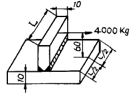
- L = 50 mm
- L = 60 mm
- L = 180 mm
- L = 190 mm
(정답률: 알수없음)
57. 미끄럼을 방지하기 위하여 접촉면에 치형을 붙여, 맞물림에 의하여 전동하도록 조합한 벨트는?
- 가죽벨트
- 고무벨트
- 강 벨 트
- 타이밍벨트
(정답률: 알수없음)
58. 롤러 체인에서 스프로킷의 잇수 60, 체인의 피치 1 cm, 스프로킷의 회전수 100 rpm 일 때, 체인의 평균속도는?
- 8 m/s
- 16 m/s
- 5 m/s
- 1 m/s
(정답률: 알수없음)
59. 다음 중 기계구조용 탄소강은?
- SM20C
- SPC3
- SPN5
- GC20
(정답률: 알수없음)
60. 모듈 m = 5, 중심거리 C = 225 mm, 속도비가 1 : 2 인 한쌍의 스퍼 기어의 잇수는 각각 몇 개인가?
- 35, 70
- 40, 80
- 25, 50
- 30, 60
(정답률: 알수없음)
4과목: 유압기기 및 건설기계일반
61. 공랭식 소형 가솔린 기관의 피스톤 왕복운동을 이용하여 만들어지는 압축공기로 로드에 타격을 가함으로써 구멍 뚫기를 하는 기계는?
- 해머 크러셔(Hammer crusher)
- 브레이커 해머(Braker hammer)
- 롤 크러셔(Roll crusher)
- 로드 밀(Rod mill)
(정답률: 알수없음)
62. 차량용 파워스티어링에 사용하는 유압장치 베인펌프에서 베인이 나오지 않고, 유압유의 점도가 높을 때 발생하는 고장 설명으로 올바른 것은?
- 기름의 누설이 증대된다.
- 진동이 일어나 멎지 않는다.
- 핸들의 복귀가 한 쪽만 나쁘다.
- 핸들의 좌우가 모두 무거워진다.
(정답률: 알수없음)
63. 기어 펌프의 압력측까지 운반된 유압유의 일부가 기어의 두 치형사이의 틈새에 가두어져 회전하면서 압축과 팽창을 반복하며 발생하는 폐입현상에 관한 설명으로 올바른 것은?
- 기어 소음이 감소한다.
- 기어 진동이 소멸된다.
- 캐비테이션이 발생한다.
- 펌프의 효율이 높아진다.
(정답률: 알수없음)
64. 유압장치의 심장부로 유압을 발생하는 부분은?
- 제어밸브
- 유압펌프
- 어큐뮬레이터
- 구동축
(정답률: 알수없음)
65. 구조물의 기초 자리 파기, U형 홈의 굴착 및 수중작업과 좁은 공간에서의 깊이파기와 호퍼작업에 적당한 굴착기계의 장치는?
- 크레인(Crane)
- 파일 드라이버(File driver)
- 클램 셸(Clam shell)
- 어스 드릴(Earth drill)
(정답률: 알수없음)
66. 다음 펌프 중 용적형 펌프인 것은?
- 원심펌프
- 혼유형펌프
- 축류펌프
- 베인펌프
(정답률: 알수없음)
67. 앞뒤 양끝에 차축과 바퀴를 붙인 것으로서, 풀 트레일러(pull trailer)라고도 하는 운반기계는?
- 호이스팅 머신(hoisting machine)
- 컨베이어 벨트(conveyor belt)
- 트랙터 드론 왜건(tracktor drawn wagon)
- 불도우저(bulldozer)
(정답률: 알수없음)
68. 유압 작동유가 구비해야 할 조건으로 틀린 것은?
- 냄새가 없을 것
- 비중이 클 것
- 내화성이 클 것
- 열 방출이 잘 될 것
(정답률: 알수없음)
69. 다음의 유압 회로도에서 ④는 무슨 밸브인가?
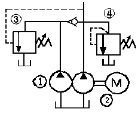
- 감압밸브
- 릴리프 밸브
- 시퀀스 밸브
- 감속밸브
(정답률: 알수없음)
70. 벨트콘베어의 운반능력을 계산하는 공식은? (단, Q:최대운반능력(t/hr), A:적하단면적(m2), V:벨트속도(m/min), r:비중량(t/m3))
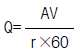
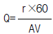
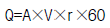
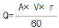
(정답률: 알수없음)
71. 실린더 입구의 분기회로에 유량제어밸브를 설치하여 실린더 입구측의 불필요한 압유를 배출시켜 작동효율을 증진시킨 속도제어 회로인 것은?
- 로킹 회로(locking circuit)
- 미터 아웃 회로(meter-out circuit)
- 카운터 바란스 회로(counter balance circuit)
- 블리이드 오프 회로(bleed-off circuit)
(정답률: 알수없음)
72. 모터 그레이더에서 전륜 경사 레버는 앞바퀴를 좌우로 몇 도(°)정도 경사시키는가?
- 20~30°
- 40~50°
- 50~60°
- 60~70°
(정답률: 알수없음)
73. 회로 내의 압력이 설정압력에 이르렀을 때 이 압력을 떨어뜨리지 않고 펌프 송출량을 그대로 기름탱크에 되돌리기 위하여 사용하는 밸브는?
- 시퀀스 밸브
- 릴리프 밸브
- 언로딩 밸브
- 카운터 밸런스 밸브
(정답률: 알수없음)
74. 펌프 토출량이 40 ℓ /min, 토출압력이 60 ㎏f/㎝2, 전효율이 80 %일 때, 유압 펌프를 구동하는 전동기의 용량은 약 몇 kW 이상이어야 하는가?
- 2 kW
- 3 kW
- 4 kW
- 5 kW
(정답률: 알수없음)
75. 비교적 소규모준설, 방파제의 밑파기 등의 공사에 사용되고 다른 준설선에 비하여 좁은 공간의 준설깊이가 깊은 곳에 적합한 준설선은?
- 펌프준설선
- 그래브준설선
- 토운선
- 버킷준설선
(정답률: 알수없음)
76. 축압기(accumulator)의 기능이 아닌 것은?
- 에너지 축적용
- 유압 발생용 용기의 기능
- 충격압력의 완충용
- 펌프 맥동 흡수용
(정답률: 알수없음)
77. KS 유압도면 기호에서 는 무슨 밸브를 나타내는 것인가?
- 체크밸브
- 안전밸브
- 감압밸브
- 언로드 밸브
(정답률: 알수없음)
78. 전기식 착암기에 속하지 않는 것은?
- 솔레노이드식(solenoid type)
- 진공전기식(pneumatic electric type)
- 원심식(centrifugal type)
- 자주식(power type)
(정답률: 알수없음)
79. 건설기계의 용도에 대한 설명 중 잘못된 것은?
- 불도우저 : 굴착
- 파우어셔블 : 적재작업
- 스크레이퍼 : 땅표면깎기
- 그레이더 : 항타작업
(정답률: 알수없음)
80. 불도우저의 규격을 나타내는 것은?
- 등판능력
- 기관출력
- 전장비길이
- 작업가능중량
(정답률: 알수없음)
봉재의 이송속도 = 바깥 지름 × π × 회전수 × 경사각 / 60
= 500 × 3.14 × 40 × 4 / 60
≈ 4.4 m/min
따라서, 정답은 "4.4 m/min" 입니다. 이는 바깥 지름, 회전수, 경사각 등의 조건이 주어졌을 때, 봉재의 이송속도를 계산하는 공식을 이용하여 구한 결과입니다.